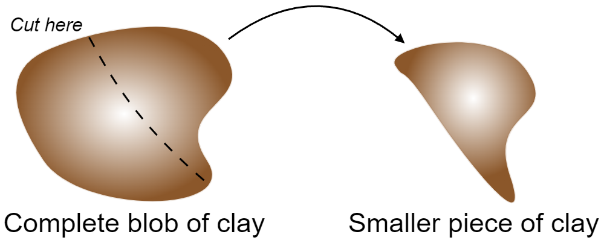
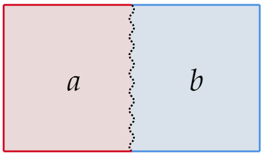

March 10th, 2024.
Thermodynamics is a topic that's highly tied to experiments. It is pretty much the norm that books and courses on thermodynamics follow a historical treatment with a big emphasis on measurements and experiments in general. The introduction of new concepts comes with a related experiment or lab scenario.
While studying some thermodynamics on my free time, I came across a new presentation that brings more rigor to those that are less experiment-driven. In this post I want to outline this methodology and derive some of the results that are familiar from a course in thermodynamics.
This post was inspired by the works of László Tisza and the book Thermal Quantum Field Theory: Algebraic Aspects and applications, by Khanna, Malbouisson, Malbouisson, and Santana.
Although previous knowledge is not necessarily required to follow the work below, it is highly recommended.
Here's a list of variables and the letters we shall use to denote them:
Variables can be of two types: Extensive and Intensive. Intensive properties are those that are independent of the size of the system. On the other hand, extensive variables are those that depend on the size of the system. As an example, consider a blob of clay:
The new piece of clay will have the same temperature and (mass) density, making them intensive variables. Still, it will have different energy, volume, and number of moles, making them extensive variables.
There are two important remarks to be made here: Densities of extensive variables are intensive, and there are variables which are neither intensive or extensive.
In the same way we can define a system's state in classical mechanics by describing its positions and momentums, we define a thermal system's state by referring to its thermal variables. In the same way we are interested in knowing the equations of motion in classical mechanics, given the classical variables of position and momentum, our goal in thermal physics is to have a function of state for the system in question.
Before moving into a brief summary of the three laws of thermodynamics, we need to make sure two points are clear: Processes are assumed to be quasi-static, meaning that states are connected by an infinite amount of intermediary states. Further, suppose we describe a system with $r+1 $ variables:
\[x=\left\lbrace x_0 ,\cdots ,x_r \right\rbrace \]We will set $x_0=E $. Then mechanical work takes the form
\[dW=f\cdot dx=\sum_{j=1}^{l} f_jdx_j;\;\;\; l\leq r \]Where the $f_j $'s are generalized forces, along with their extensive parameters $x_j $.
With this in mind, we can talk about the three laws. These allow us to talk about the dynamics, rather than just specific states of a system.
1st law: Conservation of energy. The (infinitesimal) change in internal energy is equal to a flow in heat and work:
\[dE=dQ+dW \]2nd law: On entropy and the (ir)reversibility of process. We introduce, as an assumption, the state function $S(x)\equiv S(E,x_1 ,\cdots ,x_r) $ and call it entropy. This function is extensive, analytical, and monotonically increasing (with respect to $E $).
Extensive variables (given the restrictions imposed by internal constraints) will take values which maximize $S $ in the equilibrium state.
\begin{align*} \delta S\Big|_{\text{eq.} } &= 0 \\ \delta ^2 S\Big|_{\text{eq.} } &< 0 \end{align*}There are processes which we do not observe in nature and which would not violate the first law. They don't happen because of the second law.
3rd law: It is impossible to lower the temperature of a system to $T=0 $ (by a number of finite steps).
Since $S $ is supposed to be analytic on $E $ (the internal energy variable), there is a unique way to write
\begin{align*} S &= S(E,x_1 ,\cdots ,x_r) \\ E &= E(S,x_1 ,\cdots ,x_r) \end{align*}Those two relations are known as the fundamental equations/relations. As we shall see below, we can derive everything from them. Further, we can add a further layer of abstraction and consider the fundamental equation:
\[\Psi (x)=\Psi (x_0 ,\cdots ,x_r) \]And talk about the entropy representation:
\[x_0=E \;\;\Big|\;\;\Psi =S \]Or the energy representation:
\[x_0=S\;\;\Big|\;\;\Psi =E \]Both (internal) energy and entropy are first-order homogeneous functions:
\begin{align*} S (\lambda E ,x_1 ,\cdots ,\lambda x_r) &= \lambda S (E ,x_1 ,\cdots ,x_r) \\ E (\lambda S ,x_1 ,\cdots ,\lambda x_r) &= \lambda E (S ,x_1 ,\cdots ,x_r) \end{align*}So we have in general
\[\Psi (\lambda x_0 ,\cdots ,\lambda x_r)=\lambda \Psi (x_0 ,\cdots ,x_r) \]This might seem like a trivial remark, but it is a useful one: Differentiate the above expression with respect to the parameter $\lambda $:
\begin{align*} \Psi (x_0 ,\cdots ,x_r) &= \sum_{j}^{} \frac{\partial \Psi (\lambda x)}{\partial (\lambda x_j)}\frac{\partial (\lambda x_j)}{\partial x_j} \\ &= \sum_{j}^{} \frac{\partial \Psi (\lambda x)}{\partial (\lambda x_j)}x_j \end{align*}But we can also take the differential of $\Psi $ by definition:
\begin{align*} d\Psi &= \sum_{j=0}^{r} \left( \frac{\partial \Psi }{\partial x_j} \right) dx_j \\ &= \sum_{j=0}^{r} F_j dx_j \end{align*}Where
\[F_j=\frac{\partial \Psi }{\partial x_j} \] If we set $\lambda =1 $, we have: \begin{align*} \Psi (x) &= \sum_{j=0}^{r} \frac{\partial \Psi (x)}{\partial x_j}x_j \\ &= \sum_{j=0}^{r} F_j x_j \end{align*}This means that if we know the $r+1 $ relations $F_i $ for $i=0,\cdots ,r $, known as the equations of state, we can write the fundamental relation.
Since $\Psi $ is homogeneous of first order, it follows that the $F_i $'s, being derivatives of $\Psi $, are zero-order homogeneous functions (making them intensive):
\begin{align*} \Psi (\lambda x) &= \lambda \Psi (x) \\ \text{Differentiate both sides...} \;\;\;\;\frac{\partial }{\partial x_i }\Psi (\lambda x) &= \frac{\partial }{\partial x_i }(\lambda \Psi (x)) \\ \frac{\partial \Psi (\lambda x)}{\partial (\lambda x_i )}\frac{\partial (\lambda x_i )}{\partial x_i } &= \lambda \frac{\partial \Psi (x)}{\partial x_i } \\ \lambda \frac{\partial \Psi (\lambda x)}{\partial (\lambda x_i )} &= \lambda F_i(x) \\ \lambda F_i(\lambda x) &= \lambda F_i (x) \\ F_i (\lambda x) &= F_i (x) \end{align*}With this in mind, consider taking $\lambda =1/x_r $. Then:
\[F_i=F_i \left( \frac{x_0 }{x_r},\cdots ,\frac{x_{r-1}}{x_r},1 \right) \]Meaning that the $r+1 $ different equations of state can be written in terms of $r $ intensive variables.
To see how the $F_i $'s relate to a physical system, let's consider a simple example. Imagine an isolated system divided in two subsystems:
With total energy
\[E=E_a+E_b \]And total entropy
\[S=S_a(E_a)+S_b(E_b) \]For this first example, let's keep $V_a,V_b,N_a,N_b $ fixed. Because the system is assumed to be isolated, the total energy $E $ is also constant. Consider heat flow between system $a $ and system $b $. What are the equilibrium conditions? Let's use the entropy representation ($\Psi =S $, so $F^{(s)}_{j}=\frac{\partial S}{\partial x_j} $, where the superscript denotes that we are working in the entropy representation)
Equilibrium dictates $\delta S=0 $. We see that:
\begin{align*} 0 &= \frac{\partial S}{\partial E_a} \\ &= \frac{\partial S_a}{\partial E_a}+\frac{\partial S_b}{\partial E_a}\\ &= \frac{\partial S_a}{\partial E_a}+\frac{\partial S_b}{\partial E_b} \frac{\partial E_b}{\partial E_a}\\ &= \frac{\partial S_a}{\partial E_a}+\frac{\partial S_b}{\partial E_b}(-1)\tag{Since $E $ is constant} \end{align*}So
\[\frac{\partial S_a}{\partial E_a}=\frac{\partial S_b}{\partial E_b} \]Or in terms of $F $'s:
\[F^{(s)}_{0,a}=F^{(s)}_{0,b} \]Where $0 $ denotes the first variable (Internal energy by convention), and the letter after the comma indicates which subsystem we are talking about. Physically, this is the equilibrium condition in terms of the intensive variables $F_{0,\text{sys} } ^{(s)}$.
If we move out of equilibrium, what happens to the system? The evolution will be characterized by $\delta S>0 $, that is:
\[\delta S=(F_{0,a}^{(s)}-F_{0,b}^{(s)})\delta E_{a}>0 \]There are two cases to consider:
Case 1: $F_{0,a}^{(s)} > F_{0,b}^{(s)} $. Then $\delta E_a>0 $ and thus $\delta E_b<0 $.
Case 2: $F_{0,a}^{(s)} < F_{0,b}^{(s)} $. Then $\delta E_a<0 $ and thus $\delta E_b>0 $.
It is clear that heat will travel from the low $F $ to the high $F $. This sounds familiar but not quite right. This is the opposite of how temperature behaves, so consider:
\[F_{0,\text{subsys} }^{s} = \frac{\partial S_{\text{subsys} }}{\partial E_{\text{subsys} }}=\frac{1}{T_{\text{subsys} }} \]So
\[T_{\text{subsys} }=\frac{\partial E_{\text{subsys} }}{\partial S_{\text{subsys} }} \]In general
\[T=\frac{\partial E}{\partial S} \]In particular, notice two important things: The first being that $F_{0,\text{subsys} }^{(E)}=\frac{\partial E_{\text{subsys} } }{\partial S_{\text{subsys} }}=T $, so a derivation in the Energy picture gives the same result. Furthermore, we have that
\[\frac{\partial E}{\partial S}=T\geq 0 \]Since $S $ increases monotonically with $E $.
As another example, consider a simple system, meaning that
\[x=\left\lbrace E,V,N_1 ,\cdots ,N_n \right\rbrace \]Where $V $ denotes volume and $N_i $ the number of moles of the $i $th substance. In equilibrium, we must have
\begin{align*} 0 &= \frac{\partial S}{\partial V_a} \\ &= \frac{\partial S_a}{\partial V_a}+\frac{\partial S_b}{\partial V_a}\\ &= \frac{\partial S_a}{\partial V_a}+\frac{\partial S_b}{\partial V_b} \frac{\partial V_b}{\partial V_a} \\ &= \frac{\partial S_a}{\partial V_a}+\frac{\partial S_b}{\partial V_b} (-1) \end{align*}Since $V=V_a+V_b=\text{const.} $. So
\[\frac{\partial S_a}{\partial V_a}=\frac{\partial S_b}{\partial V_b} \]Meaning
\[F_{1,a}^{(s)}=F_{1,b}^{(s)} \]If we move out of equilibrium, what happens to the system? The evolution will be characterized by $\delta S>0 $, that is:
\[\delta S=(F_{1,a}^{(s)}-F_{1,b}^{(s)})\delta V_{a}>0 \]There are two cases to consider:
Case 1: $F_{1,a}^{(s)} > F_{1,b}^{(s)} $. Then $\delta V_a>0 $ and thus $\delta V_b<0 $.
Case 2: $F_{1,a}^{(s)} < F_{1,b}^{(s)} $. Then $\delta V_a<0 $ and thus $\delta V_b>0 $.
It is clear that the chamber that will grow (positive change in volume) is the one with higher "force" $F_{1,\text{subsys} }^{(s)} $.
From definitions and as above, we have:
\begin{align*} F_1^{(s)} &= \frac{\partial S}{\partial V} \\ &= \frac{\partial S}{\partial E}\frac{\partial E}{\partial V} \\ &= \frac{1}{T}\frac{\partial E}{\partial V} \end{align*}So we identity
\[\frac{\partial S}{\partial V}=\frac{P}{T} \]In similar ways, we find that
\begin{align*} \frac{\partial E}{\partial V} &= -P \\ \frac{\partial E}{\partial N} &= \mu \\ \frac{\partial S}{\partial N} &= -\frac{\mu }{T} \end{align*}Which allow us to write (for the simple system) in the Energy representation:
\begin{align*} dE &= TdS-PdV+\sum_{j}^{} \mu _jdN_j \\ E &= TS-PV+\sum_{j}^{} \mu _jN_j \end{align*}And in the entropy representation:
\begin{align*} dS &= \frac{1}{T}dE+\frac{P}{T}dV-\frac{1}{T}\sum_{j}^{} \mu _jdN_j \\ S &= \frac{1}{T}E+\frac{P}{T}V-\frac{1}{T}\sum_{j}^{} \mu _jN_j \end{align*}Using the first law ($dE=dQ+dW $) and the energy representation, we see that
\begin{align*} TdS-PdV &= dQ+dW \\ dQ &= TdS \end{align*}Let's now consider the Legendre transform of $\Psi $ (in $r-k $ variables):
\[L=\Psi -\sum_{j=k+1}^{r} F_jx_j \]With $F_j $ defined as before. It is clear that:
\[dL=\sum_{j=0}^{k} F_jdx_j-\sum_{j=k+1}^{r} x_jdF_j \]What this does is create a function $L $ with variables
\[L(x_0,\cdots ,x_k,F_{k+1},\cdots ,F_r) \]And we refer to the $F_i $'s as conjugates of $x_i $.
Consider a simple system in the energy representation. Then $\Psi =E $. We consider a few examples:
1. Helmholtz free energy.
Take the Legendre transform in the variable $S $, and denote $L $ by $F $. We get:
\begin{align*} F &= E-\frac{\partial E}{\partial S}S \\ &= E-TS \end{align*}2. Enthalpy
Take the Legendre transform in the variable $V $, and denote $L $ by $H $. We get:
\begin{align*} H &= E-\frac{\partial E}{\partial V}V \\ &= E-(-P)V\\ &= E+PV \end{align*}3. Gibbs free energy
Take the Legendre transform in the variable $ S$ and $V $, and denote $L $ by $G $. We get:
\begin{align*} G &= E-\frac{\partial E}{\partial S}S-\frac{\partial E}{\partial V}V \\ &= E-TS+PV \end{align*}4. Grand thermodynamical potential (also known as Landau potential or Landau free energy)
Take the Legendre transform in the variable $S $ and $N $, and denote $L $ by $\Omega _G $. We get:
\begin{align*} \Omega _G &= E-\frac{\partial E}{\partial S}S-\frac{\partial E}{\partial N}N \\ &= E-TS-\mu N \end{align*}Consider now some transforms in the Entropy representation:
5. Massieu potential (also known as Helmholtz free entropy)
Take the Legendre transform in the variable $E $, and denote $L $ by $\Phi $. We get:
\begin{align*} \Phi &= S-\frac{\partial S}{\partial E}E \\ &= S- \frac{1}{T}E \end{align*}6. Planck potential (also known as Gibbs free entropy)
Take the Legendre transform in the variable $V $, and denote $L $ by $\Xi $. We get:
\begin{align*} \Xi &= S-\frac{\partial S}{\partial V}V \\ &= S- \frac{P}{T}V \end{align*}These ideas provide some advantages, such as the description of a thermal state in terms of both intensive and extensive variables.
As usual, the post is getting long. In a later blog post I will discuss further developments in the aforementioned way of doing thermodynamics. There is relevance in Statistical mechanics, a topic I have yet to discuss here.